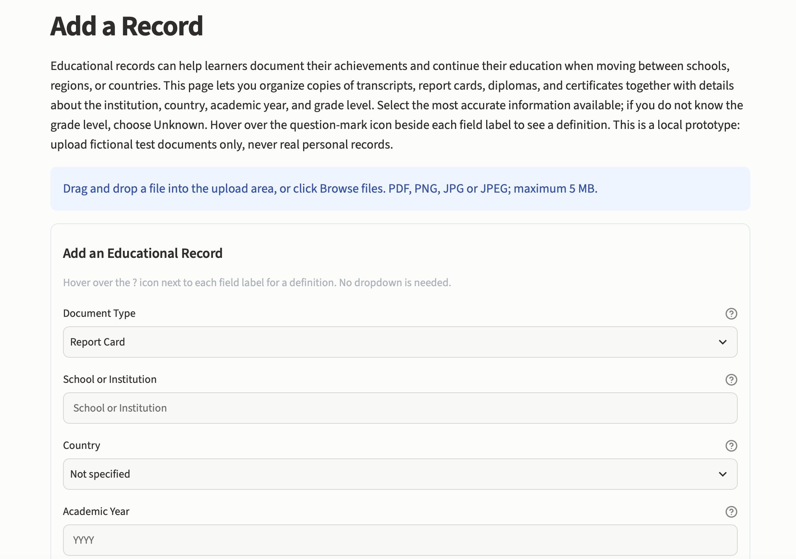
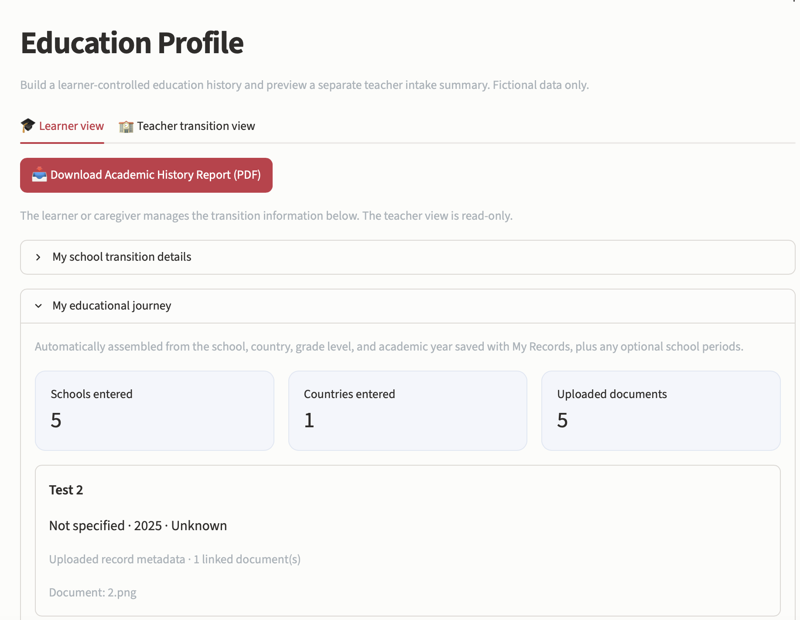
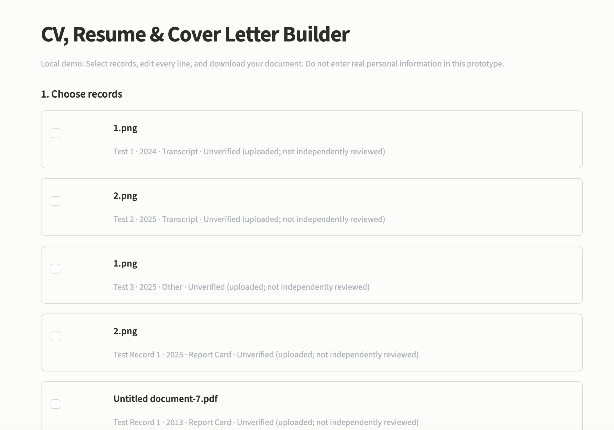
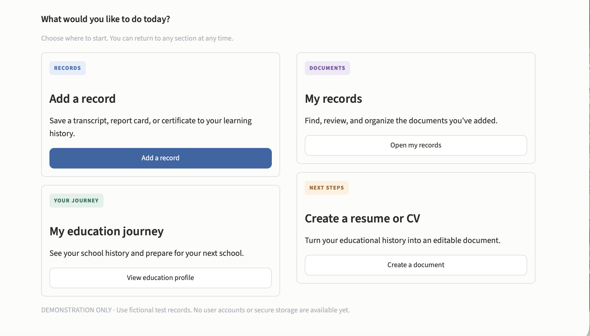

Supporting learners through every stage of their education journey.
Project Atlas is developing a digital platform designed to help displaced learners preserve educational records, build a portable education history, and prepare for future academic and employment opportunities.
Preserve important educational documents.
A central place for learners to organize academic records, certificates, transcripts, and other educational documents that may otherwise become difficult to access during displacement.

Make educational histories easier to understand.
Structure a learner's education history across schools, countries, grade levels, and academic years. The longer-term vision includes helping learners and educators understand educational transitions between different systems.

Connect education histories with future opportunities.
Help learners translate their education and experience into structured CVs, resumes, and employment-related materials.

Make the next steps easier to navigate.
A developing resource area intended to help learners navigate education systems, identify opportunities, and access relevant guidance.
This section is currently in development.

Exploring the prototype
The demonstration is intended to illustrate how the platform's core features connect throughout a learner's education journey.
- Academic Records: Explore how educational documents can be added and organized.
- Education Profile: Review how school history, grade levels, and academic progression are structured.
- Resume & CV: Explore how educational information can support career preparation.
- Resources: Review the developing guidance and opportunity section.
Use fictional information only when exploring demonstration environments. Do not upload real personal, educational, or identifying documents.
Project Atlas is an early-stage product under active development. The prototype demonstrates selected functions, while additional capabilities, security controls, and safeguarding procedures remain in development.